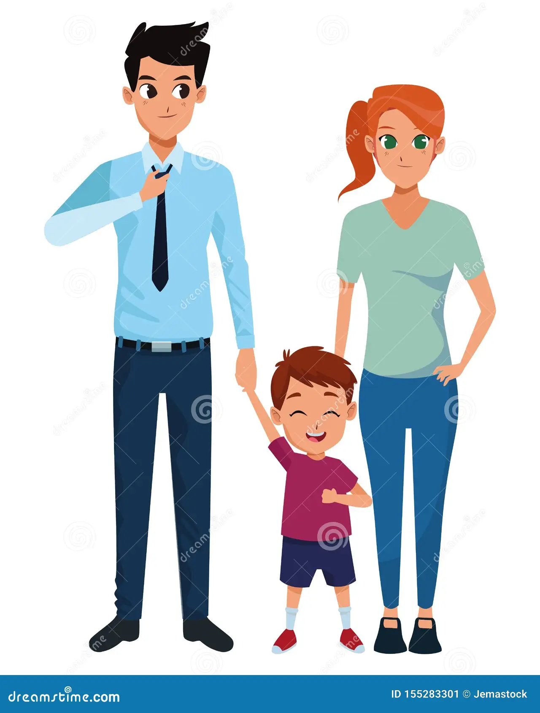

Once up on a time one couple lived in a city, and they were blessed with one boy child name Jhon.
John was the little boy, He studied in nearby school.
Every school holydays his father take him to his grand parent house which was in village.They were going by train.
In the train journey they enjoyed a lot. In train lot of people sitting arround them.
john felt very at that time.He was sitting near the train window and enjoyed the natural scenes.
At that time he heared a sound "vaddai,bajji,samosa and thattai vangalaya".
John called the daddy and he said to daddy,"Daddy i want samosa".Then daddy bought a samosa for him.
John was very happy. The grand parent house was in village.
After half an hour they reached the village.they getdown from train.

John grandfather and grand mother were waiting in the train station.when john saw the grand parent he was very happy and run to the garadpa. His grandpa hugged the john and kiss him in forehead. That was the wonderful moment. Then they went to the house. John grand pa was a former. He had hens,ducks,goat and cows. John siblings also was in village. So he got the friends. They were lived in village for one month vocation. After one month they returned to the city and john went to school. Likewise every year they were going to village by train.Since 10years they had travelled in train. So train journey was very easy to him.
Now John was 11year old boy. He grown up well. This time his daddy told to john, "John i had a important work in offfice so this year we can't go to the grandparent village". John was very upset. Because he like the grand parents very much. He wanted to go to grandparent's house. John told with daddy,"No problem dad i will manage, now i am a 11 year old boy i can go alone in train.please allow me to go alone in train". But his daddy not allowed.So john again and again pleasing his dad.After that daddy allowed john to go to village by train alone.

It was day to travel for village.John gotup earlier in the morning.He got ready to go to village. John's father and mother came to railway station to send off him. At that time his father gave one paper to john and said, "if you feel fear, read the papper". John got the paper and put it in the bag and he said, bye bye to Dad and Mom. After that he sat in the train seet.

After 10 minutes some people asked him,"why were you going alone". John replied "i am a big boy so i am going to my grandpa house alone" After some time ticket checker came ,he also raise the same question with him.John replied the same answer. But he got some fear in mind.At that time he remembered the papper that was given by his dad.So he taken the papper out side and read it. when he read the papper he was surprised and got strength in mind .Because in that papper daddy told "john you don't worry, i am here in last compartment of train, we didnt go to home, we also came with you in train". John was very happy he forgot the fear and feel good to journey now.That year also he enjoyed in grandparent house.
In this story john travelled by train alone. When he got fear he read the papper that was given by his father. So he know that he was not travelling alone. His father never leaved him alone because of his love and care. Like wise our heavenly father also have more love and care all the peoples. So our heavenly father send his only son name Jesus to the world. God never allowed us to feel fear in difficulties in the life journey. because Jesus said i am with you in every days.
"Teaching them to observe all things whatsoever i have commanded you: and, lo, i am with you alway,even unto the end of the World